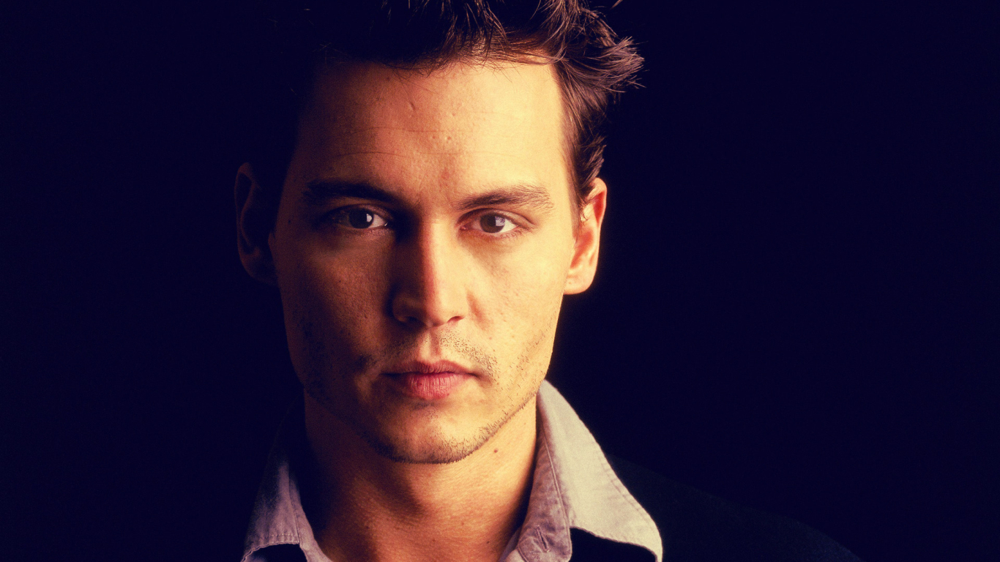

I don't pretent to be captain weird. I just do what I do.
- 1963 - Depp was born on June 9 in Owensboro, Kentucky, the youngest of four children of waitress Betty Sue Palmer and civil engineer John Christopher Depp.
- 1970 - Depp moved frequently during his childhood. He and his siblings lived in more than 20 different places, eventually settling in Miramar, Florida
- 1978 - Depp's parents divorced in when he was 15.
- 1980 to 1984 - His mother married Robert Palmer, whom Depp has called "an inspiration". At the 2016 Grammys, Depp played a song in tribute to Palmer, stating, "So the words of the song was this toast by my stepfather, who made his exit about 15 years ago. He was this really cool guy. He was a bit of a rounder. He spent about half his life in prison, in Statesville, Illinois. And he had this toast. 'Here's to you, as good as you are. Here's to me, as bad as I am. You're still as good as you are, as bad as I am.'" With the gift of a guitar from his mother when he was 12, Depp began playing in various bands. A year after his parents' divorce, he dropped out of Miramar High School to become a rock musician; he attempted to go back to school two weeks later, but the principal told him to follow his dream of being a musician. He played with The Kids, a band that enjoyed modest local success.
The Kids set out together for Los Angeles in pursuit of a record deal, changing their name to Six Gun Method, but the group split up before signing a record deal. Depp subsequently collaborated with the band Rock City Angels and co-wrote their song "Mary", which appeared on their debut Geffen Records album Young Man's Blues. - 1983 - On December 20 Depp married Lori Anne Allison, the sister of his band's bassist and singer. During their marriage, she worked as a makeup artist while he worked a variety of odd jobs, including as a telemarketer for a pen company. His wife introduced him to actor Nicolas Cage, who advised him to pursue an acting career. Depp and Allison divorced in 1985.
- 1990 – 2002 - In 1990, Depp played the title character in Tim Burton's film Edward Scissorhands, in which he starred opposite Dianne Wiest and Winona Ryder.
- 2003 – 2011 - Depp starred in the Walt Disney Pictures adventure film Pirates of the Caribbean: The Curse of the Black Pearl, which was a major box office success. He earned widespread acclaim for his comic performance as pirate Captain Jack Sparrow, and received a nomination for the Academy Award for Best Actor. Depp has said that Sparrow is "definitely a big part of me", and that he modeled the character after The Rolling Stones guitarist Keith Richards[56] and cartoon skunk Pepé Le Pew.Studio executives had at first been ambivalent about Depp's portrayal,but the character became popular with audiences. According to a survey taken by Fandango, Depp was a major draw for audiences.
- Best Actor Academy
- Golden Globe Award for Best Actor
-
Know more